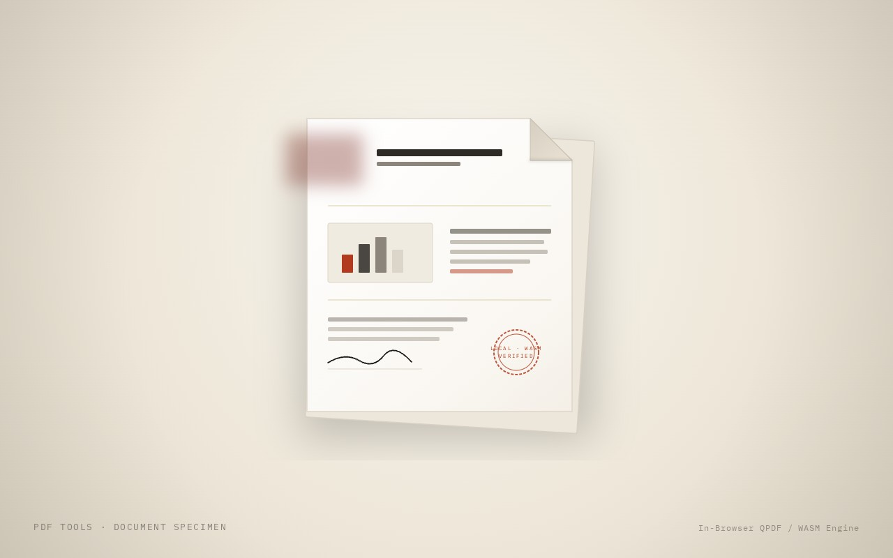

PDF Tools
Twelve PDF tools that run entirely in your browser. Your files never leave your device.

Why
Free PDF sites ask you to upload documents to someone else's server just to merge two files. I wanted the same tools without handing over the files.
What I built
- Fill and sign, compress (including "get it under N MB"), merge, reorder, split, images to PDF, PDF to images, HEIC and other image conversion, add or remove a password (AES-256), strip metadata and PDF info.
- A PDF-to-document editor that turns a PDF's content into text you can edit and reflow.
- It runs on qpdf compiled to WebAssembly inside Web Workers, so the page stays responsive. Two separate PDF engines check every output file.
- It works on phones, installs like an app and works offline.
- A small Claude-powered assistant for my family, running on a serverless Cloudflare Worker with streaming replies, hashed access codes, rate limiting and a strict content security policy.
Where it's at
Live and in use.